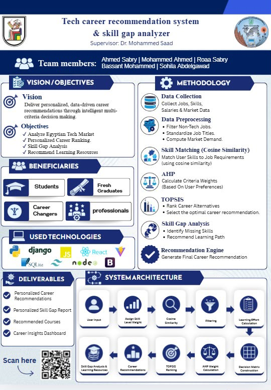

Graduation Project

Career Path Recommendation & Skill Gap Analyzer
PythonSQLDjango/FlaskPower BIAHPTOPSIS
ProblemFresh graduates and career changers struggle to match their real skills to the right roles in a fast-moving tech job market.
SolutionAn intelligent decision-support system that matches user skills to job requirements using Cosine Similarity, then ranks career options with AHP and TOPSIS multi-criteria decision-making.
ImpactDelivers personalized career recommendations, a skill-gap report, recommended learning resources, and a career insights dashboard.
AHP+TOPSISRanking engine
5Team members
🎓 Graduation Project